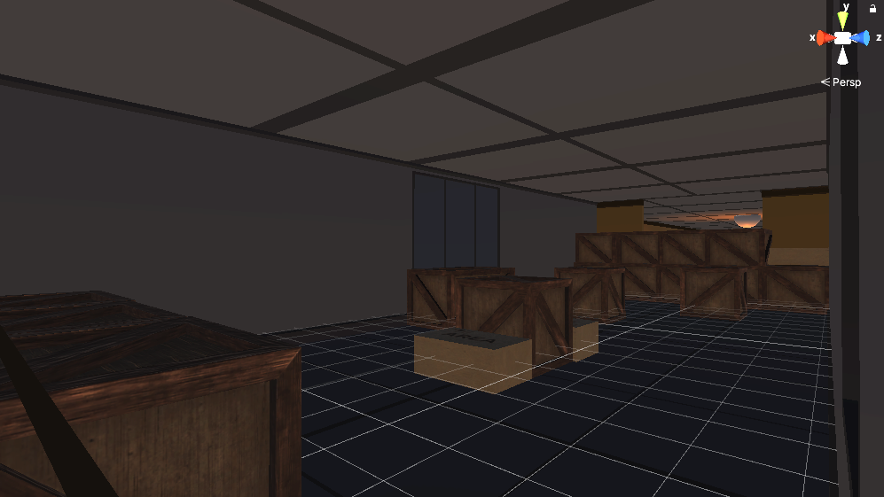
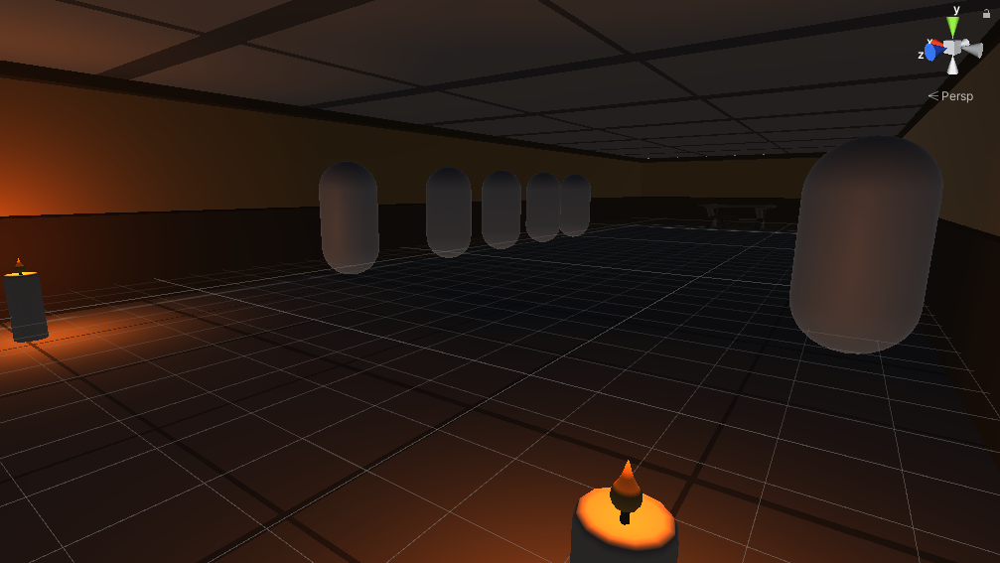
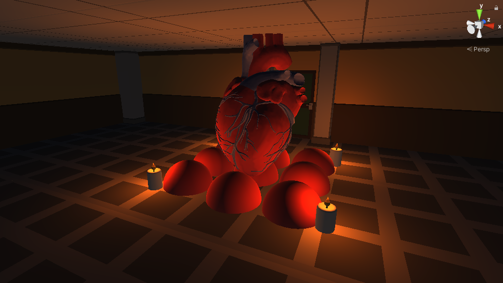
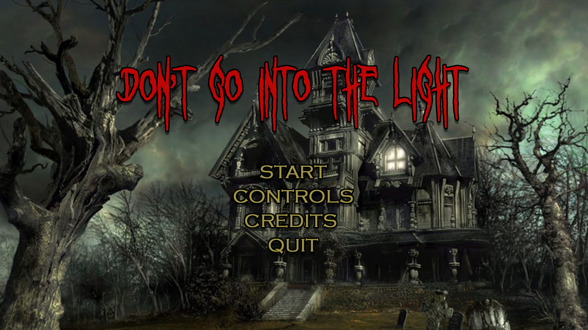
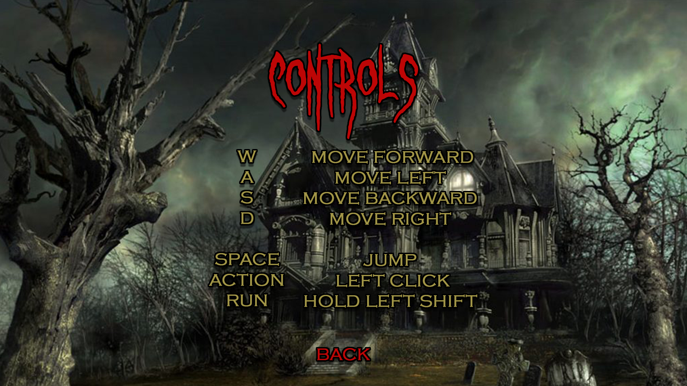

Overview
Don't Go Into The Light is a horror puzzle game that subverts a familiar horror convention: instead of darkness being dangerous, darkness provides safety while illuminated areas expose the player to danger.
Game Concept
We wanted to explore how the traditional association between darkness and danger could be reversed. In Don't Go Into The Light, monsters are made of shadow and can only move through illuminated areas. As a result, players are encouraged to seek out darkness rather than avoid it.
This reversal became the foundation of the game's puzzle design: players manipulate light sources, shadows, and objects in the environment to create safe paths and progress through each room.
Design Philosophy
Our design focused on challenging player expectations, maintaining immersion through atmosphere, and using minimal visual detail to let players fill in the unknown themselves.
Rather than relying primarily on jumpscares, we wanted tension to emerge from the player's understanding of the game's rules and the possibility of making a mistake. The goal was for players to gradually learn that the instinct to move toward light was actually working against them.
Core Mechanics
The game's central mechanic is the manipulation of light and shadow. Players interact with objects and light sources to change the environment and create safe routes through each puzzle.
Core mechanics included moving objects to manipulate shadows, extinguishing candles and other light sources, creating pathways through darkness, and using a water gun to interact with the environment.
The water gun functions as a tool rather than a traditional weapon. Its limited supply requires players to manage their water while using its projectile to extinguish lights and interact with objects affected by water.
Puzzle Design
Each room was designed around a puzzle that introduced or expanded on the game's mechanics. Players had to understand how light, shadows, objects, and movement interacted in order to determine a safe path forward.
The puzzles were designed to gradually introduce the game's core mechanics before combining them in more complex situations.
Level Design
The game world was organized into several areas that gradually introduced the player's abilities and mechanics.
The Box Room introduced movement and parkour. The Water Gun Hallway introduced the water gun and its environmental applications. The Heart Room served as the final area and connected the game's mechanics with its narrative and atmosphere.



Enemy Design
The monsters were designed as environmental hazards rather than conventional enemies. Because they are made from shadow, they camouflage against darkness and are restricted to illuminated areas.
This allowed the monsters to reinforce the game's central mechanic: the player is safest in darkness, while entering the light creates vulnerability.
Audio & Atmosphere
Audio was used to reinforce the player's understanding of the environment and create tension without relying on constant jumpscares.
The soundtrack was divided into layered musical states for the normal environment, safe darkness, unsafe light, and nearby danger. These layers could fade in and out depending on the player's surroundings, allowing the atmosphere to change alongside the gameplay.
User Interface
The interface was designed to maintain the game's minimalist horror aesthetic while providing the information players needed to begin and navigate the experience.


Design Evolution
The game's direction changed during development as we refined the balance between horror and puzzle design. Early concepts leaned more heavily toward satire, but we ultimately focused on a stronger horror atmosphere after finding that the audio and environmental design were more effective in that direction.
We also refined the game's central mechanic and surrounding systems as the project developed, using the design document to track changes from early concepts through the final design.
Play the Game
Explore the completed Don't Go Into The Light prototype.
Play Don't Go Into The Light ↗Reflection
Don't Go Into The Light taught me how a strong central mechanic can influence many different parts of a game's design. The idea of reversing the usual relationship between light and darkness shaped the puzzles, level structure, enemy behavior, and atmosphere rather than existing only as a visual theme.
I also learned the importance of designing mechanics that work together to reinforce the intended player experience. The combination of environmental puzzles, limited resources, enemy behavior, lighting, and dynamic audio helped create a consistent relationship between the game's mechanics and its horror atmosphere.